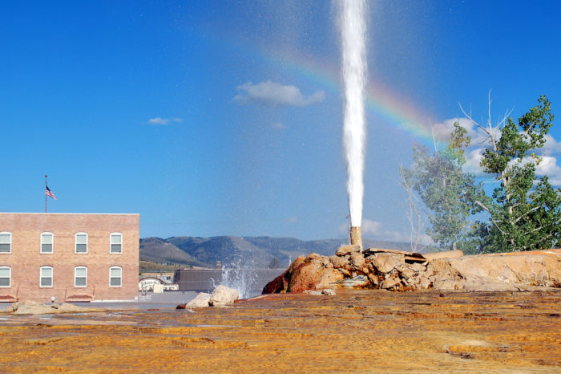

Soda Springs Idaho
Weather Summary
°F
%
mph
Five Day Forecast
Mon

15°C
Tues
15°C
Wed
15°C
Thurs
15°C
Fri
15°C
Upcoming Town Events
Article Title
Soda Springs has a rich history starting when the Pioneers headed west for California and Oregon. Due to the abundance of springs and water in the area, Soda Springs became known as the "Oregon Trail Oasis." The famous Steam Boat Springs and Hooper Springs, which was originally called "Beer Springs," were some of the main sites to be seen by the earlier settlers and travelers as well as the many sulfurous springs that many pioneers journaled about the smell coming from the them. The City later became further famous in 1937 when a well was being drilled in search of hot water for a bath house that unleashed what is known as the Geyser, which is the only captive Geyser in the world.